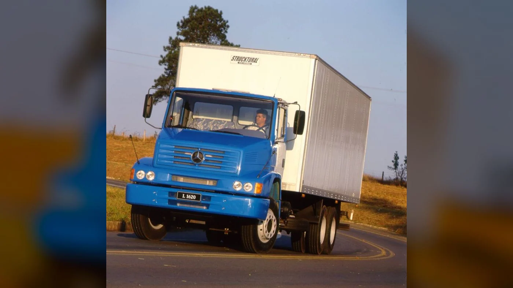
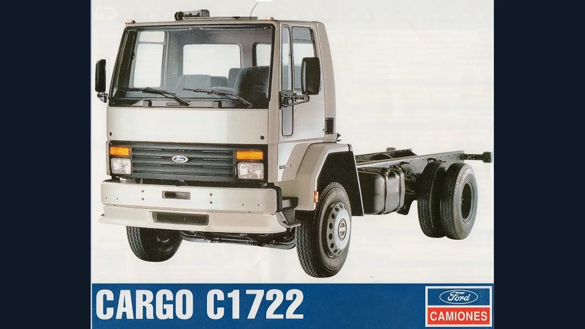
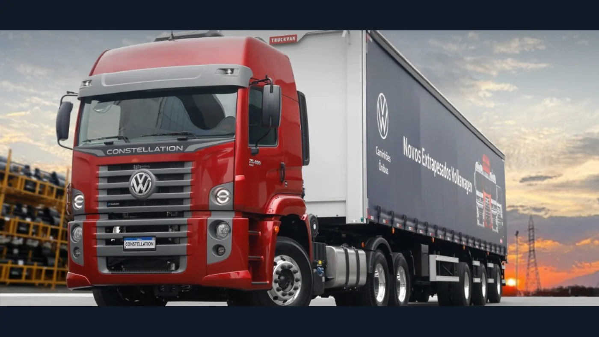

Preguntar por los camiones “más utilizados” de la historia argentina parece pedir una tabla sencilla. En realidad, compara décadas con formas muy diferentes de medir: producción nacional, importación, patentamientos, versiones y años de permanencia en servicio. No existe una serie pública única que permita ordenar con precisión todos los modelos desde mediados del siglo XX hasta hoy. Por eso, esta selección no es un ranking estadístico: reúne cinco familias con fuerte presencia documentada en distintos momentos del transporte de cargas.
El criterio combina duración, fabricación o ensamblaje local cuando corresponde, variedad de aplicaciones y evidencia de uso comercial. Un mismo nombre puede abarcar muchas versiones; tampoco conviene confundir un camión con el chasis de colectivo que comparte su número. Leídos así, los cinco cuentan una historia más interesante que una lista de ganadores.
1. Mercedes-Benz L 1114: el camión de muchas tareas
El L 1114 quedó asociado al trabajo cotidiano de varias generaciones: reparto, cereal, hacienda, materiales y carrocerías especiales. Su silueta de cabina con trompa corta y el motor diésel OM 352 forman parte de la memoria de rutas y pueblos. Los documentos industriales argentinos y los anuarios de ADEFA registran la producción de la familia; su historia completa se desarrolla en nuestra nota sobre el 1114.
Su fortaleza histórica no fue una cifra aislada, sino la posibilidad de adaptarlo. Un L 1114 de reparto y otro preparado para trabajo rural podían compartir una base reconocible y, a la vez, diferir en caja, ejes o transmisión. Esa diversidad hizo que mecánicos y repuesteros conocieran el modelo, aunque también vuelve peligroso pedir piezas únicamente diciendo “es para un 1114”.
Conviene separar tres nombres. L 1114 designa el camión de carga; LA 1114, una variante de tracción integral; y LO 1114, un chasis para colectivo. La fama del LO agrandó la presencia cultural del número, pero sus unidades no deben sumarse automáticamente a las del camión para afirmar una posición en ventas de carga.
El 1114 ayuda a entender una etapa en la que la posibilidad de reparar y adaptar un vehículo podía prolongar su vida durante muchos años. Esa vigencia no reemplaza las comprobaciones actuales de seguridad y estado para cualquier unidad que siga circulando.
2. Mercedes-Benz L 1620: el semipesado de otra generación

Con el L 1620, el transporte argentino vio consolidarse una clase de camiones más preparada para la carga de media distancia y trabajos de mayor porte. El registro oficial argentino recoge variantes entre 1993 y 2002; las fichas técnicas muestran que la denominación atravesó cambios de motor y emisiones. La historia del L 1620 explica por qué no todos los ejemplares son mecánicamente idénticos.
Las versiones tempranas equiparon el OM 366 A turboalimentado; otras incorporaron el OM 366 LA con aire de admisión refrigerado. En una ficha Euro II posterior Mercedes-Benz declaró 211 CV para una configuración determinada. Esos datos deben leerse como especificaciones de versiones concretas, no como una característica universal de cualquier L 1620.
Su presencia en furgones, volcadores y transportes regionales lo convirtió en un nombre habitual de los talleres. La diferencia con el 1114 no se resume en “más potencia”: incluye otro tamaño de trabajo, otra etapa técnica y una variedad de carrozados. Para identificar repuestos importan el año, la variante y el número de motor tanto como el emblema de la puerta.
3. Ford Cargo 1722 y 1722e: el lugar de Ford en el trabajo mediano

El Cargo 1722 llevó la cabina frontal de Ford a aplicaciones muy distintas: reparto, carga general, servicios y transporte regional. Su denominación reapareció en generaciones posteriores, por lo que “1722” no basta para describir un motor o sistema eléctrico. En nuestra historia del 1722 y el 1722e detallamos esas diferencias.
La propia retrospectiva oficial de Ford sitúa la llegada de los Cargo con motor electrónico a mediados de los años 2000 y menciona específicamente al C-1722e. También incluye un Cargo 1722 dentro de la renovación de cabinas presentada en 2011. No se trata de tres vehículos exactamente iguales unidos por un simple cambio de letra.
Para el transportista, el Cargo resultó una alternativa de trabajo de una marca ya conocida por generaciones de operadores. Para el taller actual, su historia deja una lección práctica: una unidad mecánica y otra electrónica pueden requerir diagnóstico, filtros, sensores y piezas distintas aun cuando compartan el número comercial.
4. IVECO Tector: presencia medible en el mercado reciente

El Tector es el caso mejor respaldado por cifras recientes dentro de esta selección. En un comunicado de 2023, IVECO informó que su Tector 170E de 17 toneladas había registrado 888 patentamientos en el primer semestre. Al presentar los resultados de ese año, la marca afirmó que el Tector era el camión más vendido del país y que encabezaba desde hacía catorce años el segmento de más de 16 toneladas. Estas son cifras y afirmaciones del fabricante para períodos concretos, no un total histórico de todas sus versiones.
La familia se utiliza en distribución, servicios urbanos, cargas regionales y aplicaciones específicas. La producción de IVECO en Córdoba también explica parte de su lugar en el mercado local. Con el tiempo se sumaron versiones de distintas capacidades, motorizaciones y transmisiones; un Tector 170E no es intercambiable sin más con un Tector de 9, 11 o 24 toneladas.
Su caso muestra que “muy utilizado” puede tener evidencia cuantitativa para un tramo reciente de la historia, mientras los modelos clásicos deben reconstruirse con fuentes industriales y archivos. Para la posventa, la familia exige identificar con precisión generación, motor, configuración de ejes y norma de emisiones.
5. Volkswagen Constellation: de la importación al ensamblaje en Córdoba

La familia Constellation representa la expansión de Volkswagen en el transporte de carga de la región y su arraigo posterior en la Argentina. Desde 2024, la planta de Córdoba ensambla el Constellation 17.280 en versiones rígida y tractora, según informó Volkswagen. La marca también señaló que el modelo figuraba entre los que impulsaron sus ventas argentinas de 2024. La nota histórica del Constellation recorre las generaciones y aplicaciones.
Es importante separar familia y versión. Constellation no significa un solo camión: hay vehículos de distintos ejes, pesos y tareas. La producción de un 17.280 local no convierte automáticamente en nacionales todas las versiones de la gama. Tampoco permite usar la suma de camiones y buses fabricados por la planta como si fuera una cifra exclusiva del Constellation.
Su incorporación a la producción cordobesa lo ubica en un capítulo nuevo de la industria argentina. Más que desplazar a los históricos, muestra cómo cambia la idea de un camión “habitual”: hoy conviven el vehículo nuevo conectado, unidades de generaciones previas y clásicos que siguen apareciendo en rutas y talleres.
Qué tienen en común y qué no se puede comparar
Los cinco atravesaron mercados de trabajo diferentes. El 1114 simboliza la adaptación y la longevidad; el L 1620, el crecimiento del semipesado; el Cargo 1722, una alternativa de cabina frontal con evolución electrónica; el Tector, una presencia reciente con resultados de patentamiento publicados; y el Constellation, la ampliación regional con ensamblaje argentino. No equivalen en tonelaje, época ni forma de contar unidades.
Una lista estadística rigurosa necesitaría, para cada modelo y cada año, una misma definición de camión, cifras de producción nacional, importación y patentamiento, bajas del registro y versiones agrupadas sin duplicar. Esos datos no están publicados como serie comparable para toda la historia. Esta selección sirve para recordar y entender cinco protagonistas, no para afirmar que un modelo le ganó a otro en cantidad acumulada.
La lectura práctica también importa. Si un camión de estas familias entra al taller, su nombre histórico es el comienzo de la identificación, no el final. Número de chasis, motor, año y configuración permiten buscar el repuesto correcto. Así, la memoria del transporte se conecta con el trabajo de mantener esas unidades en condiciones hoy.